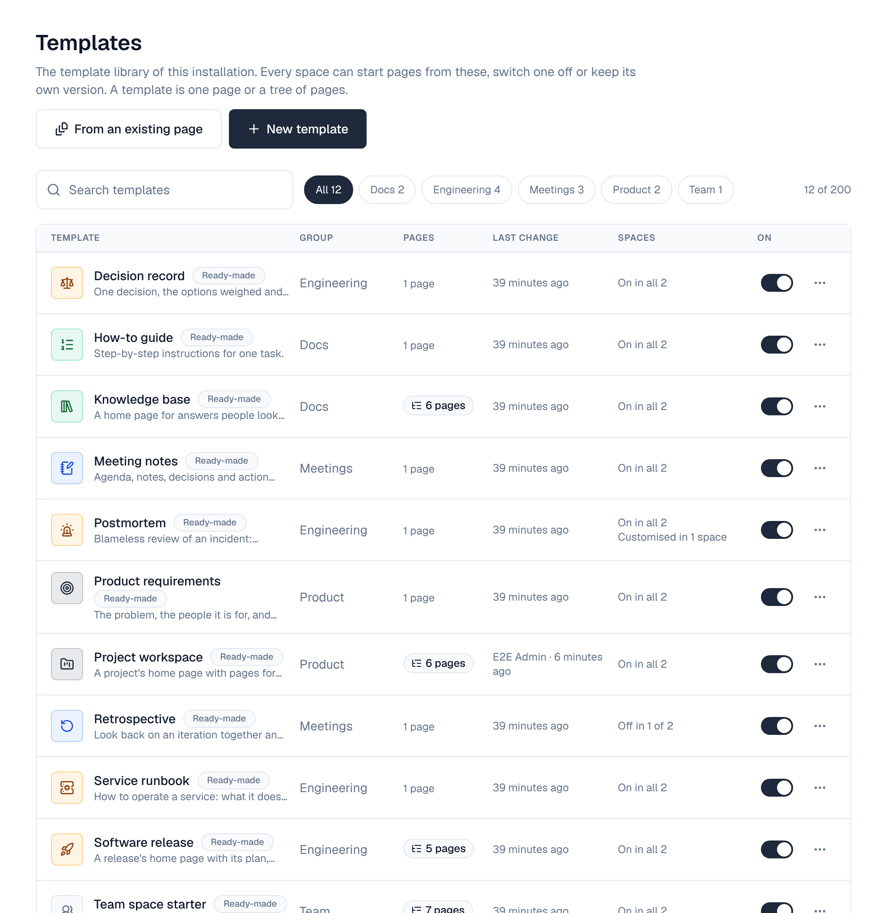

The template library holds the templates every space offers under New page. A template is one page or a tree of pages. Spaces can switch a library template off for themselves, keep a customised copy, and have templates of their own; how that looks to space admins and writers is in the user guide's Copies and templates.

1. Who manages it
Settings → Templates needs the wiki_templates:manage permission, which super admins have. It is a permission of the installation: no space role grants it. The library is part of every licence tier.
2. Ready-made templates
A new installation, and an existing one after upgrading, gets twelve templates marked Ready-made:
| Template | Group | Pages |
|---|---|---|
| Meeting notes | Meetings | 1 |
| Retrospective | Meetings | 1 |
| Weekly status report | Meetings | 1 |
| Decision record | Engineering | 1 |
| Postmortem | Engineering | 1 |
| Service runbook | Engineering | 1 |
| Software release | Engineering | 5: the plan, test plan, release notes and rollback plan under a home page |
| How-to guide | Docs | 1 |
| Knowledge base | Docs | 6: getting started, how-to guides, FAQ and troubleshooting under a home page |
| Product requirements | Product | 1 |
| Project workspace | Product | 6: scope, meeting notes, decisions, risks and status updates under a home page |
| Team space starter | Team | 7: how we work, team rituals, onboarding, tools and access, and contacts under a home page |
You can change a ready-made template like any other. Reset to original puts its name, description, group, icon, content and pages back to what the Wiki ships; whether it is on stays as it is. A ready-made template can't be deleted: switch it off instead.
3. What you can do
| Action | What it does |
|---|---|
| New template | Opens the template editor on an empty template. From an existing page makes one from a page you can edit instead, without its images, optionally with the pages under it. |
| The switch in the On column | Off: no space offers the template. Spaces that keep a customised copy of it keep their copy. |
| Edit content | Opens the template in the template editor: its pages, their content and its details. |
| Name, group and icon | The name, the description people see when they pick a template, the group it is listed under and its icon. |
| On in new spaces | Whether spaces offer the template unless they decide otherwise. Off: a space admin has to switch it on in the space. |
| Preview | Shows the template's pages and content as people see them under New page. |
| Duplicate | Adds a copy with its content, pages, group and icon. |
| Delete | Spaces can no longer start pages from it. Spaces' own copies stay, and pages made from it keep their content. |
The Spaces column says where each template is offered (On in all 12, Off in 2 of 12) and how many spaces keep a customised copy.
4. Limits
- 200 templates in the library, and 100 of its own in each space.
- 50 pages and 5 levels in one template, counting its top page.
- Templates hold text, tables and blocks, without images or videos.
5. Audit and events
- Every change to a template is in the audit log.
- Templates raise events: page.template.create, page.template.update (a reset and a save in the editor too), page.template.delete, and page.template.switch when a space turns a library template on or off for itself. Policies can refuse them and automation can react.
6. API
| Method | Path | Permission | What it does |
|---|---|---|---|
| GET | /api/templates | wiki_templates:manage | The library |
| POST | /api/templates | wiki_templates:manage | Add a template: written (content, pages) or from a page |
| PUT | /api/templates/{id}/content | wiki_templates:manage | Save a template whole: its details, top page and every page under it |
| POST | /api/templates/{id}/reset | wiki_templates:manage | Reset a ready-made template to the original |
| GET | /api/spaces/{key}/templates | Read the space | The templates the space offers; ?all=1 (space admins) adds the library ones it has switched off or replaced |
| PUT | /api/spaces/{key}/templates/{id}/enabled | Space admin | Switch a library template on or off for the space |
| PUT | /api/spaces/{key}/templates/{id}/content | Space admin | Save one of the space's templates whole |
GET /api/openapi.json describes every template route with its fields.